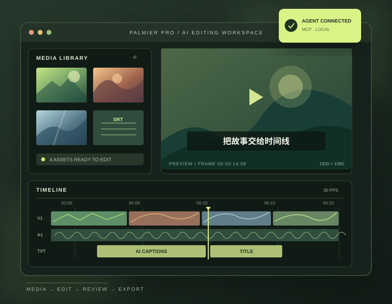

访谈与课程
转写对白，检索主题，删除口头禅与静音段，再生成字幕供人工校对。
转写 · 粗剪 · 字幕OPEN SOURCE RESEARCH · 2026.09.26
Palmier Pro 是一款 macOS 非线性剪辑软件。它按画面与声音查找素材，让 Agent 经 MCP 修改帧级时间线、生成媒体并导出；人负责设定剪辑意图和审片。适合重复初剪，也提供研究可审查 Agent 工作流的样本。

一句话定位
输入视频、图片、声音、字幕和剪辑要求，输出可编辑工程、成片或编辑器交换文件。Agent 可使用画面、对白和时间线状态作为依据；具体取舍由任务要求和人工复核决定。它本身是应用，并非可直接嵌入其他产品的剪辑 SDK。
01 / 能力地图
选择一个环节，查看当前官方文档列出的主要操作。实际工具清单以安装版本为准。
读取项目和时间线，导入媒体，检查画面与语音内容，并按画面或对白搜索素材。
读取轨道、片段、标记和工程设置。
导入本地文件、目录、URL 或字幕。
按画面内容或所说的话查找素材。
抽取帧并检查合成后的时间线画面。
对应工具示例get_timeline · import_media · search_media · inspect_timeline
02 / 技术原理
下面把公开源码能验证的结构，与当前文档描述的产品工作流合在一起理解。
用户提出任务，例如“删除停顿、加字幕，再导出竖屏版”。
应用开放本地服务；Agent 读取项目上下文并调用明确的剪辑工具。
时间线由轨道和片段组成。片段位置、时长、裁切和关键帧按帧记录，操作进入编辑器的撤销历史。
AVFoundation 与 Core Image／Metal 参与画面合成；人可查看结果、继续修改或撤销。
关键设计判断
这让批量自动化与人工精修处于同一工作区。公开代码展示了帧级时间线模型、Agent 工具与撤销调用；闭源新版本的内部实现不能从旧源码直接推断。
03 / 使用场景
这些是基于已公布能力推导出的适用场景，并非项目方承诺的效果指标。
转写对白，检索主题，删除口头禅与静音段，再生成字幕供人工校对。
转写 · 粗剪 · 字幕按画面内容挑选镜头，把片头、字幕样式和节奏规则写成工作流，制作多个版本并审片。
视觉选镜 · 多版本 · 审片为缺少的镜头生成图片、视频或音效，直接放回同一工程继续剪辑。
生成 · 组合 · 调整04 / 可扩展方向
下面是本研究提出的方向，不代表 Palmier 已提供相应现成产品。
记录一次成功的剪辑规则：镜头选择、停顿处理、字幕风格、导出设置。下一条视频复用并保留复核步骤。
把“按讲稿初剪”“生成三种画幅”“检查字幕溢出”封装成完整任务，减少 Agent 串联低级操作的负担。
为批量编辑建立进度、可检查结果、失败重试和人工验收，避免仅凭工具返回的“成功”判断成片质量。
对当前工作环境
你当前使用 Windows，而 Palmier Pro 需要 macOS 26 和 Apple Silicon。若是为研究仓库选题，它是“专业创作软件如何被 Agent 操作”的好案例；若要现在就落地视频生产，需要先具备兼容的 Mac。
阅读完整研究记录